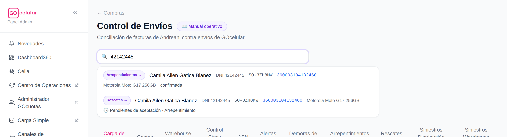
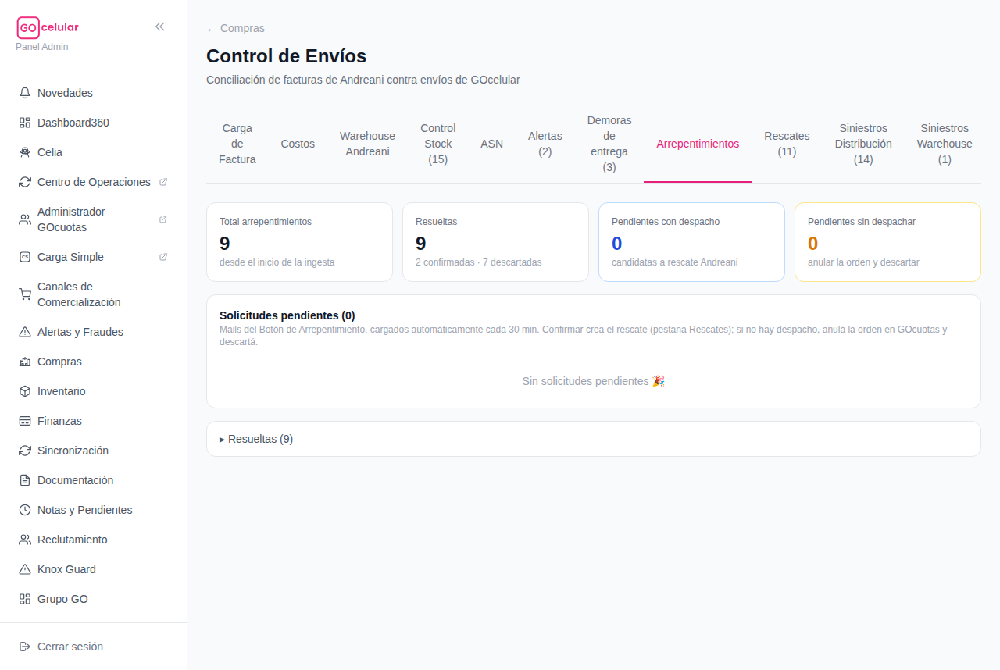
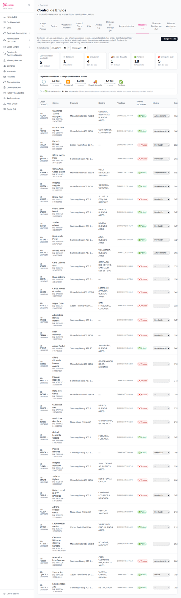
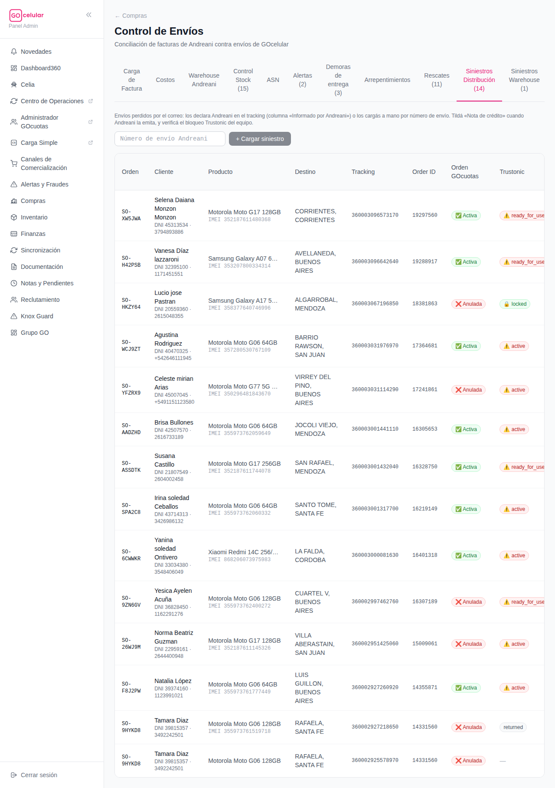
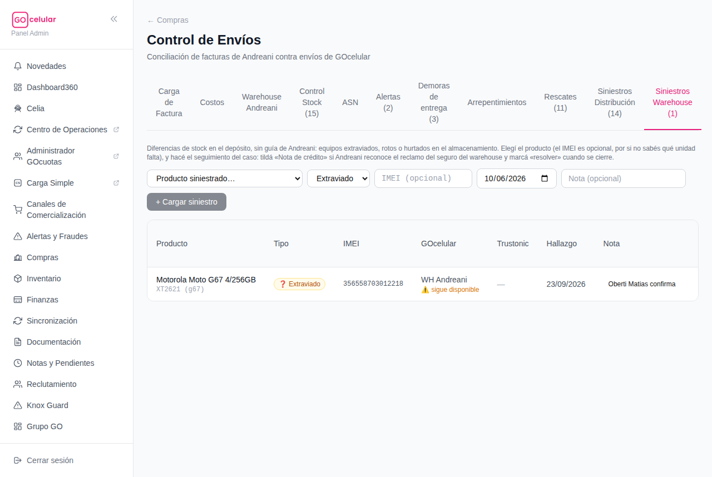

<title>Manual — Posventa de envíos: Arrepentimientos, Rescates y Siniestros</title>
<style>
  :root {
    --bg: #fcfcfa;
    --surface: #ffffff;
    --ink: #221e28;
    --muted: #6d6678;
    --line: #e9e4ee;
    --accent: #c21a5f;
    --accent-soft: #fdeef4;
    --bono: #6d28d9;
    --bono-soft: #f3eefe;
    --ok: #047857;
    --ok-soft: #ecfdf3;
    --warn: #b45309;
    --warn-soft: #fff7e8;
    --danger: #be123c;
    --danger-soft: #fef1f3;
    --chip: #f4f1f7;
  }
  @media (prefers-color-scheme: dark) {
    :root:not([data-theme="light"]) {
      --bg: #17141b; --surface: #201c26; --ink: #efeaf3; --muted: #a79fb3;
      --line: #352f3d; --accent: #f06ba3; --accent-soft: #3a1f2d;
      --bono: #b49afc; --bono-soft: #2c2440; --ok: #4ade80; --ok-soft: #16301f;
      --warn: #fbbf24; --warn-soft: #362a12; --danger: #fb7185; --danger-soft: #3b1c24;
      --chip: #2a2531;
    }
  }
  :root[data-theme="dark"] {
    --bg: #17141b; --surface: #201c26; --ink: #efeaf3; --muted: #a79fb3;
    --line: #352f3d; --accent: #f06ba3; --accent-soft: #3a1f2d;
    --bono: #b49afc; --bono-soft: #2c2440; --ok: #4ade80; --ok-soft: #16301f;
    --warn: #fbbf24; --warn-soft: #362a12; --danger: #fb7185; --danger-soft: #3b1c24;
    --chip: #2a2531;
  }
  * { box-sizing: border-box; }
  body {
    background: var(--bg); color: var(--ink);
    font: 16px/1.65 system-ui, -apple-system, "Segoe UI", Roboto, sans-serif;
    margin: 0; padding: 0 20px 80px;
  }
  main { max-width: 880px; margin: 0 auto; }
  h1, h2, h3 { line-height: 1.25; text-wrap: balance; }
  h1 { font-size: 2rem; margin: 40px 0 6px; }
  h2 { font-size: 1.45rem; margin: 56px 0 4px; padding-top: 16px; border-top: 3px solid var(--accent); }
  h3 { font-size: 1.05rem; margin: 26px 0 8px; }
  p { margin: 10px 0; }
  .sub { color: var(--muted); margin: 0 0 8px; }
  .meta { font-size: .8rem; color: var(--muted); }
  .eyebrow { text-transform: uppercase; letter-spacing: .09em; font-size: .72rem; font-weight: 700; color: var(--accent); }

  nav.toc { display: flex; flex-wrap: wrap; gap: 8px; margin: 22px 0 10px; position: sticky; top: 0; background: var(--bg); padding: 12px 0; z-index: 5; border-bottom: 1px solid var(--line); }
  nav.toc a { font-size: .82rem; font-weight: 600; color: var(--ink); text-decoration: none; background: var(--chip); border: 1px solid var(--line); border-radius: 999px; padding: 5px 12px; }
  nav.toc a:hover, nav.toc a:focus-visible { border-color: var(--accent); color: var(--accent); outline: none; }

  table { border-collapse: collapse; width: 100%; font-size: .9rem; }
  .tablewrap { overflow-x: auto; border: 1px solid var(--line); border-radius: 12px; background: var(--surface); margin: 14px 0; }
  th { text-align: left; font-size: .72rem; text-transform: uppercase; letter-spacing: .05em; color: var(--muted); padding: 10px 14px; border-bottom: 1px solid var(--line); }
  td { padding: 9px 14px; border-bottom: 1px solid var(--line); vertical-align: top; }
  tr:last-child td { border-bottom: none; }

  ol.pasos { counter-reset: paso; list-style: none; padding: 0; margin: 14px 0; display: grid; gap: 10px; }
  ol.pasos li { counter-increment: paso; background: var(--surface); border: 1px solid var(--line); border-radius: 12px; padding: 12px 16px 12px 54px; position: relative; }
  ol.pasos li::before {
    content: counter(paso); position: absolute; left: 14px; top: 12px;
    width: 28px; height: 28px; border-radius: 999px; background: var(--accent); color: #fff;
    display: grid; place-items: center; font-weight: 800; font-size: .9rem;
  }
  .callout { border-radius: 12px; padding: 12px 16px; margin: 14px 0; border: 1px solid; font-size: .93rem; }
  .callout.oro { background: var(--warn-soft); border-color: var(--warn); }
  .callout.tip { background: var(--ok-soft); border-color: var(--ok); }
  .callout.ojo { background: var(--danger-soft); border-color: var(--danger); }
  .callout b:first-child { display: block; margin-bottom: 2px; }

  figure { margin: 18px 0; }
  figure .frame { max-height: 540px; overflow-y: auto; border: 1px solid var(--line); border-radius: 12px; background: var(--surface); }
  figure img { display: block; width: 100%; height: auto; }
  figcaption { font-size: .8rem; color: var(--muted); margin-top: 6px; }

  .pill { display: inline-block; font-size: .76rem; font-weight: 700; border-radius: 999px; padding: 2px 10px; }
  .pill.vig { background: var(--ok-soft); color: var(--ok); }
  .pill.ven { background: var(--chip); color: var(--muted); }
  .pill.rojo { background: var(--danger-soft); color: var(--danger); }
  .pill.violeta { background: var(--bono-soft); color: var(--bono); }
  .pill.ambar { background: var(--warn-soft); color: var(--warn); }
</style>

<main>
  <p class="eyebrow">GOcelular360 · Manual operativo</p>
  <h1>📮 Posventa de envíos — Arrepentimientos, Rescates y Siniestros</h1>
  <p class="sub">Las 4 pestañas de <b>Compras → Control de Envíos</b> que resuelven lo que pasa <b>después</b> de vender: el cliente se arrepintió, hay que frenar un envío, o un equipo se perdió. Con capturas reales.</p>
  <p class="meta">Actualizado el 7/10/2026 · Los números de las capturas son del día en que se sacaron.</p>

  <nav class="toc">
    <a href="#mapa">🧭 El mapa</a>
    <a href="#buscador">🔍 Buscador</a>
    <a href="#arrepentimientos">🙋 Arrepentimientos</a>
    <a href="#rescates">🚚 Rescates</a>
    <a href="#sin-dist">📦 Siniestros Distribución</a>
    <a href="#sin-wh">🏭 Siniestros Warehouse</a>
    <a href="#oro">⭐ Reglas de oro</a>
  </nav>

  <h2 id="mapa">🧭 El mapa en 30 segundos</h2>
  <p>Las cuatro pestañas se distinguen por <b>una pregunta</b>: ¿dónde está el equipo y qué hay que hacer con él?</p>
  <div class="tablewrap"><table>
    <tr><th>Pestaña</th><th>Qué es</th><th>La usás cuando…</th></tr>
    <tr><td>🙋 <b>Arrepentimientos</b></td><td>Cola automática del Botón de Arrepentimiento de la tienda (Ley 24.240).</td><td>Un cliente pidió cancelar la compra: hay que decidir si se anula la orden o se rescata el envío.</td></tr>
    <tr><td>🚚 <b>Rescates</b></td><td>Envíos que le pedimos a Andreani <b>traer de vuelta</b> antes de que lleguen (o desde la sucursal).</td><td>Hay que frenar una entrega: arrepentimiento, fraude, falla, devolución.</td></tr>
    <tr><td>📦 <b>Siniestros Distribución</b></td><td>Envíos que el correo <b>perdió en la calle</b> (los declara Andreani en el tracking).</td><td>Un envío figura siniestrado: hay que bloquear el equipo y cobrar la nota de crédito.</td></tr>
    <tr><td>🏭 <b>Siniestros Warehouse</b></td><td>Equipos perdidos, rotos o hurtados <b>dentro del depósito</b> (sin guía de envío).</td><td>El control de stock detecta un faltante en el warehouse: hay que registrarlo y reclamar al seguro.</td></tr>
  </table></div>
  <div class="callout tip"><b>💡 La distinción clave</b>¿El equipo estaba <b>viajando</b>? → es de Distribución (rescate si se puede frenar, siniestro si se perdió). ¿Estaba <b>en el depósito</b>? → Siniestro Warehouse. ¿Todavía <b>no salió</b>? → se resuelve anulando la orden, sin tocar a Andreani.</div>

  <h2 id="buscador">🔍 El buscador: encontrá el caso sin recorrer pestañas</h2>
  <p><b>Qué es:</b> la caja de búsqueda arriba de las pestañas. Le pegás un <b>DNI</b>, un <b>número de seguimiento de Andreani</b>, una <b>orden</b> (SO-…) o un <b>IMEI</b>, y te dice <b>en qué pestañas aparece ese caso</b>: Alertas, Demoras, Arrepentimientos, Rescates, Siniestros Distribución y Siniestros Warehouse.</p>
  <p><b>Para qué:</b> cuando te llega un reclamo ("soy el DNI tal, ¿dónde está mi equipo?") no hace falta saber de antemano en qué pestaña buscar — el buscador te lo dice, y hasta te deja resolver desde ahí mismo.</p>
  <h3>Cómo se usa</h3>
  <ol class="pasos">
    <li>Escribí el dato en la caja (4 caracteres o más). Da igual si el DNI viene con puntos o espacios: <b>28.456.123</b> y <b>28456123</b> encuentran lo mismo. También funciona con un pedazo del tracking.</li>
    <li>Cada resultado es una tarjeta con el <b>chip violeta de la pestaña</b> donde está, el cliente, la orden, el tracking (clickeable al seguimiento de Andreani), el producto y el estado. Si el mismo caso vive en dos pestañas (ej. un arrepentimiento que ya tiene rescate), aparecen las dos tarjetas.</li>
    <li>¿Querés el contexto completo? Tocá el <b>chip violeta</b> y la página salta a esa pestaña.</li>
    <li>¿Querés resolverlo ya? Usá los <b>botones de acción de la tarjeta</b> — son los mismos de cada tabla, con la misma confirmación en dos pasos (primer click arma el botón, segundo ejecuta): <b>Arrepentimientos</b> pendientes → Confirmar / Descartar (con motivo) · <b>Demoras</b> → Rescate / Siniestro / Descartar · <b>Siniestros Distribución</b> → tildar NC emitida · <b>Siniestros Warehouse</b> abiertos → Resolver.</li>
  </ol>
  <div class="callout tip"><b>💡 En Siniestros Warehouse se busca por IMEI</b>Esas filas no tienen DNI ni tracking (el equipo nunca salió del depósito), así que el buscador las encuentra solo por IMEI. Alertas y Rescates no tienen botones de acción: son informativas (en Rescates el estado avanza solo con el tracking).</div>
  <figure>
    <div class="frame"></div>
    <figcaption>📸 El <b>buscador</b> — un DNI real encontrado en dos pestañas a la vez: el arrepentimiento ya confirmado y su rescate en curso.</figcaption>
  </figure>

  <h2 id="arrepentimientos">🙋 Arrepentimientos</h2>
  <p><b>Qué es:</b> cada vez que un cliente toca el <b>Botón de Arrepentimiento</b> en la tienda, llega un mail. El sistema lee ese buzón <b>solo, cada 30 minutos</b>, busca la compra por DNI y la deja acá como solicitud pendiente. Nadie tiene que revisar el correo.</p>
  <p><b>Para qué:</b> cumplir la Ley 24.240 (responder dentro de las 24 hs) sin que se pierda ningún pedido, y decidir rápido la acción correcta.</p>
  <h3>Cómo se usa</h3>
  <ol class="pasos">
    <li>Mirá las <b>tarjetas</b> de arriba: las que importan son <b>Pendientes con despacho</b> (azul → van a rescate) y <b>Pendientes sin despachar</b> (ámbar → van a anulación).</li>
    <li>Por cada fila, mirá dos columnas: <b>Orden GOcuotas</b> (<span class="pill vig">activa</span> / <span class="pill rojo">anulada</span>) y <b>Fulfillment</b>, que dice dónde está el equipo: <span class="pill ven">en cola</span> (no salió del circuito: anular alcanza) · <span class="pill ambar">⚠ enviado a Andreani</span> (ya está en el depósito: además de anular, <b>pedir que NO lo pickeen</b>) · <span class="pill rojo">⚠ pickeado</span> (equipo asignado: <b>frenar la expedición ya</b>) · <span class="pill vig">expedido</span> (ya viaja: corresponde rescate).</li>
    <li><b>Si tiene tracking</b> (ya viaja): tocá <b>Confirmar</b> → se crea el rescate con motivo "Arrepentimiento" y la solicitud pasa a la pestaña Rescates. Listo.</li>
    <li><b>Si no tiene despacho</b>: anulá la orden en GOcuotas (el <b>Order ID</b> está en la fila) y tocá <b>Descartar → "Anulada antes del despacho"</b>. En la próxima media hora la columna Orden GOcuotas va a pasar sola a "anulada" — esa es tu confirmación de que la anulación impactó.</li>
    <li>El chip <span class="pill ambar">insistió ×N</span> marca clientes que tocaron el botón varias veces — priorizalos.</li>
  </ol>
  <div class="callout oro"><b>⭐ Nada se carga dos veces</b>Si el mismo cliente insiste por la misma compra, el sistema suma la insistencia a la fila existente en vez de crear otra. Y si la fila dice <span class="pill rojo">sin orden encontrada</span>, el DNI no matcheó ninguna compra: revisala a mano antes de descartar.</div>
  <figure>
    <div class="frame"></div>
    <figcaption>📸 Pestaña <b>Arrepentimientos</b> — tarjetas de control y la cola con sus acciones.</figcaption>
  </figure>

  <h2 id="rescates">🚚 Rescates</h2>
  <p><b>Qué es:</b> el pedido formal a Andreani de <b>interceptar un envío y traerlo de vuelta</b> al depósito, antes de que se entregue (o desde la sucursal si el cliente no lo retiró).</p>
  <p><b>Para qué:</b> recuperar equipos de arrepentimientos, fraudes, fallas o devoluciones mientras todavía están en manos del correo.</p>
  <h3>Cómo se usa</h3>
  <ol class="pasos">
    <li>La mayoría de los rescates <b>entran solos</b> (desde Arrepentimientos o desde Demoras). Para cargar uno a mano: botón <b>“+ Cargar rescate”</b> → pegás el <b>número de seguimiento</b> de Andreani y elegís el <b>motivo</b> (Fraude, Arrepentimiento, Devolución, Falla, No Entregado).</li>
    <li>De ahí en más <b>el estado avanza solo</b> leyendo el tracking de Andreani. El flujo normal: 🕓 <b>Pendiente de aceptación</b> (cargado, Andreani aún no lo registró) → 🕐 <b>Solicitado</b> → ⏸️ <b>En sucursal</b> → 🚚 <b>En viaje de vuelta</b> → ✅ <b>Rendido</b> (equipo de vuelta en el depósito).</li>
    <li>El final malo es ❌ <b>Entregado igual</b>: el rescate llegó tarde y Andreani se lo dio al cliente. Ese caso vuelve a gestión (contactar al cliente).</li>
    <li>Usá las tarjetas de estado como filtro (tocás una y la tabla muestra solo esos) y la columna <b>Días</b> para detectar rescates clavados.</li>
    <li>La columna <b>Orden · Order ID</b> trae el ID de GOcuotas al lado del pedido — es el dato para anular la orden sin buscar en otro lado.</li>
  </ol>
  <figure>
    <div class="frame"></div>
    <figcaption>📸 Pestaña <b>Rescates</b> — el pipeline con tiempos promedio entre estados, la carga manual y el seguimiento.</figcaption>
  </figure>

  <h2 id="sin-dist">📦 Siniestros Distribución</h2>
  <p><b>Qué es:</b> envíos que el correo <b>perdió en la calle</b>. Casi siempre los declara el propio Andreani en el tracking (columna «Informado por Andreani»); también se pueden cargar a mano por número de envío.</p>
  <p><b>Para qué:</b> que cada equipo perdido termine en dos cosas: <b>equipo bloqueado</b> (que nadie lo use) y <b>nota de crédito cobrada</b> (que Andreani lo pague).</p>
  <h3>Cómo se usa</h3>
  <ol class="pasos">
    <li>Si Andreani declaró el siniestro, la fila ya está. Para cargar uno a mano: pegá el <b>número de envío</b> y tocá <b>“+ Cargar siniestro”</b>.</li>
    <li>Mirá la columna <b>Trustonic</b>: un equipo siniestrado tiene que estar <span class="pill vig">locked</span> (bloqueado). Si figura <span class="pill rojo">active</span> o <span class="pill ambar">ready_for_use</span>, alguien puede estar usándolo: <b>bloquealo desde Knox/Trustonic</b> antes que nada.</li>
    <li>Revisá <b>Orden GOcuotas</b>: si el cliente nunca recibió el equipo, la orden debería terminar <span class="pill rojo">anulada</span> (y el cliente recibir uno nuevo o su plata).</li>
    <li>Cuando Andreani emite la nota de crédito del siniestro, <b>tildá «Nota de crédito»</b> en la fila. Mientras no esté tildada, el reclamo está vivo.</li>
  </ol>
  <figure>
    <div class="frame"></div>
    <figcaption>📸 Pestaña <b>Siniestros Distribución</b> — cada fila es un envío perdido; las columnas clave son Orden GOcuotas y Trustonic.</figcaption>
  </figure>

  <h2 id="sin-wh">🏭 Siniestros Warehouse</h2>
  <p><b>Qué es:</b> equipos <b>extraviados, rotos o hurtados dentro del depósito</b> de Andreani — nunca salieron a la calle, así que no tienen guía de envío. Suelen aparecer por diferencias en el control de stock.</p>
  <p><b>Para qué:</b> registrar el faltante, reclamar al <b>seguro del warehouse</b> y que el caso no quede en la nada.</p>
  <h3>Cómo se usa</h3>
  <ol class="pasos">
    <li>Elegí el <b>producto</b> siniestrado y el <b>tipo</b> (Extraviado, Roto, Hurtado). El <b>IMEI es opcional</b> — cargalo si sabés exactamente qué unidad falta; si no, con el modelo alcanza.</li>
    <li>Poné la <b>fecha del hallazgo</b> y una <b>nota</b> con el contexto (quién lo confirmó, nº de reclamo, etc. — la nota se puede editar después). Tocá <b>“+ Cargar siniestro”</b>.</li>
    <li>Ojo al aviso <span class="pill ambar">⚠ sigue disponible</span>: significa que GOcelular todavía lo cuenta como stock vendible — reclamale el ajuste a Pedro para que no se venda un equipo que no existe.</li>
    <li>Cuando Andreani reconoce el reclamo del seguro, <b>tildá «Nota de crédito»</b>; cuando el caso se cierra del todo, marcá <b>«resolver»</b>.</li>
  </ol>
  <figure>
    <div class="frame"></div>
    <figcaption>📸 Pestaña <b>Siniestros Warehouse</b> — carga por producto (IMEI opcional) y seguimiento del reclamo.</figcaption>
  </figure>

  <h2 id="oro">⭐ Reglas de oro (resumen para la heladera)</h2>
  <div class="tablewrap"><table>
    <tr><th></th><th>Regla</th></tr>
    <tr><td>0️⃣</td><td><b>¿Te llegó un reclamo y no sabés dónde está el caso?</b> Pegá el DNI o el tracking en el <b>buscador</b> de arriba: te dice en qué pestañas aparece y te deja accionar desde ahí.</td></tr>
    <tr><td>1️⃣</td><td><b>¿Dónde está el equipo?</b> No salió → anular orden. Viaja → rescate. Se perdió viajando → Siniestro Distribución. Se perdió en el depósito → Siniestro Warehouse.</td></tr>
    <tr><td>2️⃣</td><td>Arrepentimiento <b>con tracking → Confirmar</b> (rescate). <b>Sin despacho → anular en GOcuotas + Descartar</b>. El Order ID está en la fila.</td></tr>
    <tr><td>3️⃣</td><td>En Arrepentimientos, el chip <b>Fulfillment</b> manda: <span class="pill ambar">⚠ enviado a Andreani</span> = pedir que no lo pickeen; <span class="pill rojo">⚠ pickeado</span> = frenar la expedición ya.</td></tr>
    <tr><td>4️⃣</td><td>Los estados de Rescates <b>avanzan solos</b> con el tracking — no hace falta actualizarlos. Lo que sí se mira: ❌ "Entregado igual" (gestionar con el cliente) y rescates con muchos <b>días</b> clavados.</td></tr>
    <tr><td>5️⃣</td><td>Equipo siniestrado = equipo <b>bloqueado</b>. Trustonic en <span class="pill rojo">active</span> en un siniestro es una alarma, no un dato.</td></tr>
    <tr><td>6️⃣</td><td>Todo siniestro termina en una <b>nota de crédito tildada</b>. Checkbox sin tildar = plata sin cobrar.</td></tr>
    <tr><td>7️⃣</td><td>En Warehouse, <span class="pill ambar">⚠ sigue disponible</span> = el sistema puede vender un equipo que no existe → pedir el ajuste de stock.</td></tr>
  </table></div>

  <p class="meta" style="margin-top:40px">Manual generado desde el código y la pantalla real de GOcelular360 · dudas de fondo: Emiliano · este documento se regenera cuando cambian las pestañas.</p>
</main>
